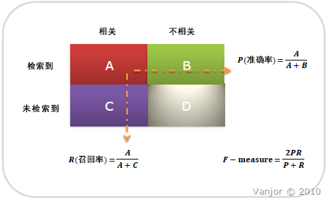

性能指标¶
目录
分类问题¶
Recall & Precision¶
{kind=link}

混淆矩阵(confusion matrix)¶
召回率/真阳性/查全率(Recall) = 系统检索到相关文件/系统所有相关的文件总数
\[R = \frac{TP}{TP+FN}\]
准确率/查准率(Precision) = 系统检索到的相关文件/系统所有检索到的文件总数
\[P = \frac{TP}{TP+FP}\]
注解
准确率和召回率是互相影响的，理想情况下肯定是做到两者都高，但是一般情况下准确率高、召回率就低，召回率低、准确率高，当然如果两者都低，那是什么地方出问题了。一般情况，用不同的阀值，统计出一组不同阀值下的精确率和召回率
如果是做搜索，那就是保证召回的情况下提升准确率；如果做疾病监测、反垃圾，则是保准确率的条件下，提升召回。

PR curve¶
为了平衡精确率和召回率的影响，较为全面地评价一个分类器，引入F-score 来衡量。
F-score: 权衡精度和召回率(精度和召回率的调和平均)
\[F_{\beta} = \frac{(1+\beta^2)\times P\times R}{\beta^2 \times P + R}\]其中，\(\beta （ \beta > 0 ）\) 的取值反映了精确率和召回率在性能评估中的相对重要性具体，通常情况下，取值为1。
当 \(\beta = 1\) 时，就是常用的 \(F_1\) 值(平衡 F 分数)，表明精确率和召回率一样重要
\[\begin{split}\frac{2}{F_1} &= \frac{1}{P} + \frac{1}{R} \\ F_1 &= \frac{2PR}{P+R}\end{split}\]当 \(\beta = 2\) 时， 表明召回率的权重比精确率高；
当 \(\beta = 0.5\) 时， 表明精确率的权重比召回率高。
G-mean: 评价不平衡数据的模型表现
\[G-mean = \sqrt{\frac{TP}{TP+FN}\times\frac{TN}{TN+FP}}\]accuracy
\[acc = \frac{TP+TN}{TP+TN+FP+FN}\]
Macro-averaging & Micro-averaging¶
F-score 评估指标适用于二分类问题，但当我们的问题属于多分类问题时，在不同类别下综合考察分类器的优劣就要用到宏平均和微平均。
宏平均(Macro-averaging): 先对每一个类统计指标值，然后再对所有类求算术平均值。
一种说法：
\[F_{macro} = \frac{1}{n} \sum_{i=1}^n F_i\]另一种说法：
\[\begin{split}P_{macro} &= \frac{1}{n} \sum_{i=1}^n P_i \\ R_{macro} &= \frac{1}{n} \sum_{i=1}^n R_i \\ F_{macro} &= \frac{2\times P_{macro} \times R_{macro}}{P_{macro} + R_{macro}}\end{split}\]微平均(Micro-averaging): 先对数据集中的每一个示例不分类别进行统计，建立全局混淆矩阵，然后计算相应的指标。
\[\begin{split}P_{micro} &= \frac{\bar{TP}}{\bar{TP} + \bar{FP}} = \frac{\sum_{i=1}^n {TP}_i}{\sum_{i=1}^n {TP}_i + \sum_{i=1}^n {FP}_i} \\ R_{micro} &= \frac{\bar{TP}}{\bar{TP} + \bar{FN}} = \frac{\sum_{i=1}^n {TP}_i}{\sum_{i=1}^n {TP}_i + \sum_{i=1}^n {FN}_i} \\ F_{micro} &= \frac{2 \times P_{micro} \times R_{micro}}{P_{micro} + R_{micro}}\end{split}\]
宏平均与微平均的不同之处在于：宏平均赋予 每个类 相同的权重，然而微平均赋予 每个样本决策 相同的权重。因为从 \(F_1\) 值的计算公式可以看出，它忽略了被分类器正确判定为负类的样本，其大小主要由被分类器正确判定为正类的那些样本决定，在微平均评估指标中，样本数多的类别主导着样本数少的类。因而在测试数据集上，度量分类器对大类判别的有效性应该选择微平均，而度量分类器对小类判别的有效性则应该选择宏平均。
mAP¶
平均精度均值(mean average precision, mAP) 可以由它的三个部分来理解：P, AP, mAP。
P (Precision)即前述准确率，它只考虑了返回结果中相关文档的个数，没有考虑文档之间的序。对一个搜索引擎或推荐系统而言返回的结果必然是有序的，而且越相关的文档排的越靠前越好，于是有了 AP 的概念。
对一个有序的列表，计算 AP (average Precision) 的时候要先求出每个位置上的 Precision，然后对所有的位置的 Precision 再做 average。所以 AP 也就是 PR曲线 下的面积，这里 average 是对 recall 取平均。
而 mAP (mean average precision) 的 mean，是对所有类别取平均。
以分类问题为例，mAP的过程如下：
先把所有bbox找出来 并加上confidence
然后每类根据confidence从大到小排列
每个confidence算出其recall和precision得到每一类的ap曲线
取mean
ROC & AUC¶
ROC(Receiver Operating Characteristic) 和 AUC(Area Under roc Curve)是评价分类器的指标，上面第一个图的ABCD仍然使用，只是需要稍微变换。
ROC关注两个指标
True Positive Rate ( TPR/Recall ) = TP / [ TP + FN] ，TPR代表能将正例分对的概率
False Positive Rate( FPR ) = FP / [ FP + TN] ，FPR代表将负例错分为正例的概率
在 ROC 空间中，每个点的 横坐标是FPR，纵坐标是TPR ，这也就描绘了分类器在 TP（真正的正例）和 FP（错误的正例）间的trade-off。ROC 的主要分析工具是一个画在 ROC 空间的曲线—— ROC curve。我们知道，对于二值分类问题，实例的值往往是连续值，我们通过设定一个阈值，将实例分类到正类或者负类（比如大于阈值划分为正类）。因此我们可以变化阈值，根据不同的阈值进行分类，根据分类结果计算得到 ROC 空间中相应的点，连接这些点就形成 ROC curve。ROC curve经过 (0, 0) (1, 1)，实际上 (0, 0) 和 (1, 1) 连线形成的 ROC curve 实际上代表的是一个随机分类器。一般情况下，这个曲线都应该处于 (0, 0) 和 (1, 1) 连线的上方。如图所示:

ROC curve¶
用 ROC curve 来表示分类器的 performance 很直观好用。可是，人们总是希望能有一个数值来标志分类器的好坏。于是 AUC 就出现了。顾名思义，AUC 的值就是处于 ROC curve 下方的那部分面积的大小。通常，AUC 的值介于0.5到1.0之间，较大的 AUC 代表了较好的 Performance。
注解
AUC 用得比较多的原因是， 实际环境中正负样本极不均衡，PR 曲线会受此影响出现较大浮动，无法很好反应出分类器性能；而ROC受此影响较小。
参考链接： http://www.vanjor.org/blog/2010/11/recall-precision/ http://bubblexc.com/y2011/148/ http://wenku.baidu.com/view/ef91f011cc7931b765ce15ec.html
FRR, FAR & EER¶
错误拒接率(False Rejection Rate, FRR) 的标准称谓是FNMR(False Non-Match Rate 不匹配率)，表示本该正确的样本未被识别出来的概率 = Miss/Total_True
错误接受率(False Acceptance Rate, FAR)，表示本该错误的样本被错误地识别为正确的概率 = False Alarm/ Total_False
相等错误率(Equal Error Rate, EER), 主要用于评价分类算法的整体性能。它将 FAR、FRR 两个参数统一为一个参数。FAR 随阈值增大而减小，FRR随阈值增大而增大，当到某一点，两条曲线相交(FRR=FAR)，这时的阈值就是等错误率阈值，有EER=FR=FA。EER 表示的是准确率和召回率的折衷，因此其也可以定义为：the Equal Error Rate (EER) is the point on the ROC curve that corresponds to have an equal probability of miss-classifying a positive or negative sample. This point is obtained by intersecting the ROC curve with a diagonal of the unit square。下面列出了两种定义下该点的位置，显然，EER 值越小的时候，分类器的整体性能越高。


NLG¶

BLEU¶
双语互译质量评估辅助工具(BiLingual Evaluation Understudy, BLEU) 通过将一句机器翻译的话与其相对应的几个参考翻译作比较，算出一个综合分数，判断两个句子的相似程度。
BLEU实质是对两个句子的 共现词频率 计算。
其中 \(P_n\) 是N-gram 精度, 一般情况1-gram反映的是这篇译文的充分性, 2-gram以上反映的是译文的流畅性; \(P_n\) 的分母表示candidate 中的 n-gram 个数，分子表示参考译文和candidate的截断n-gram； \(BP\) 是惩罚因子, \(l_c\) 代表表示机器翻译译文的长度， \(l_s\) 表示参考答案的有效长度
\(\mathrm{Ref}_j\_\mathrm{Count}_{w_i}\) : 词 \(w_i\) 在第 \(j\) 个参考译文里出现的次数
\(\mathrm{Count}_{w_i}\) : candidate 中词 \(w_i\) 的个数
缺点:
不考虑语言表达（语法）上的准确性；
测评精度会受 常用词 和 短译句 的干扰；
没有考虑同义词或相似表达的情况，可能会导致合理翻译被否定；
ROUGE¶
ROUGE(Recall-Oriented Understudy for Gisting Evaluation) 是从召回率的角度计算，常用于自动摘要任务和机器翻译的评价
N-gram co-ccurence metrics measuring content overlaps
METEOR¶
METEOR(Metric for Evaluation of Translation with Explicit ORdering) 的目的是解决BLEU中的固有缺陷，METEOR 还有一些其他指标不具备的功能，如同义词匹配
召回率基础上的指标相比于单纯基于精度的指标(如BLEU、NIST), 其结果和人工判断的结果有较高相关性
计算METEOR 首先要对两个句子中的unigram 进行对齐，得到一组 alignment (a set of mappings between unigrams), 对齐原则如下：
every unigram in the candidate translation must map to zero or one unigram in the reference
If there are two alignments with the same number of mappings, the alignment is chosen with the fewest crosses
据此计算unigram precision \(P\) 和 Unigram recall \(R\)
其中，
\(m\) 表示 candidate translation 与 reference translation 匹配上的unigram 个数，
\(\omega _t\) 表示 candidate translation 中unigram 的个数
\(\omega _r\) 表示 reference translation 中unigram 的个数
则unigram precision \(P\) 和 Unigram recall \(R\) 的调和平均
\(\beta\) 一般取为3。以上只考虑了单个词的一致性，没有考虑大的连续块，因此这里引入惩罚因子。首先unigrams are grouped into the fewest possible chunks，penalty \(p\) 定义为
\(\gamma\) 一般取为 0.5，\(\theta\) 一般取为3， 其中，
\(c\) 表示 number of chunks
\(u_m\) 表示 number of unigrams that have been mapped.
最终， METEOR的定义如下